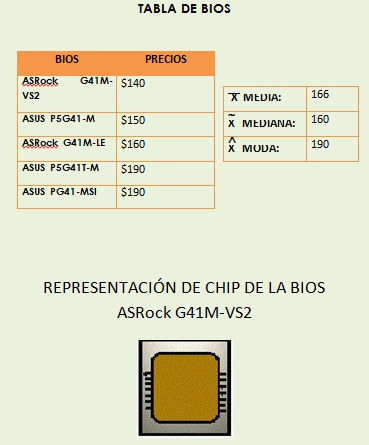

Media para datos no agrupados:
Es la suma de todos los datos, dividido en el número total de datos.

Mediana para datos no agrupados:
Para un conjunto de datos ordenados en forma ascendente o descendente, la mediana es el valor central de los datos.
Moda para datos no agrupados:
Es el valor que aparece con mayor frecuencia en un conjunto de datos.
